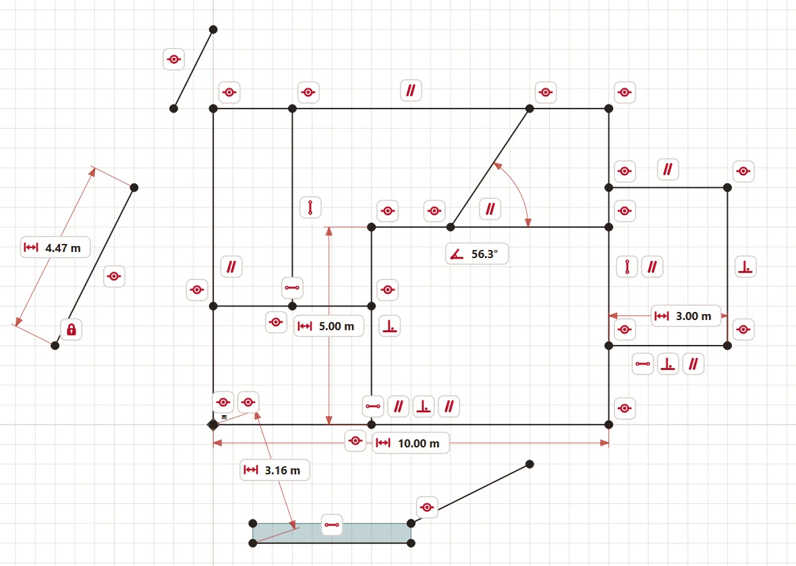
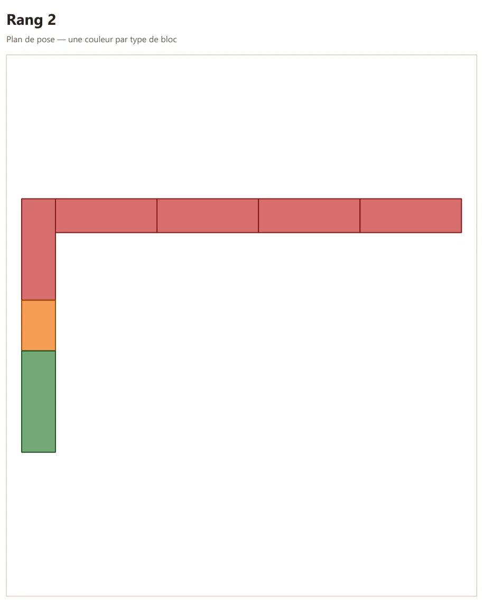
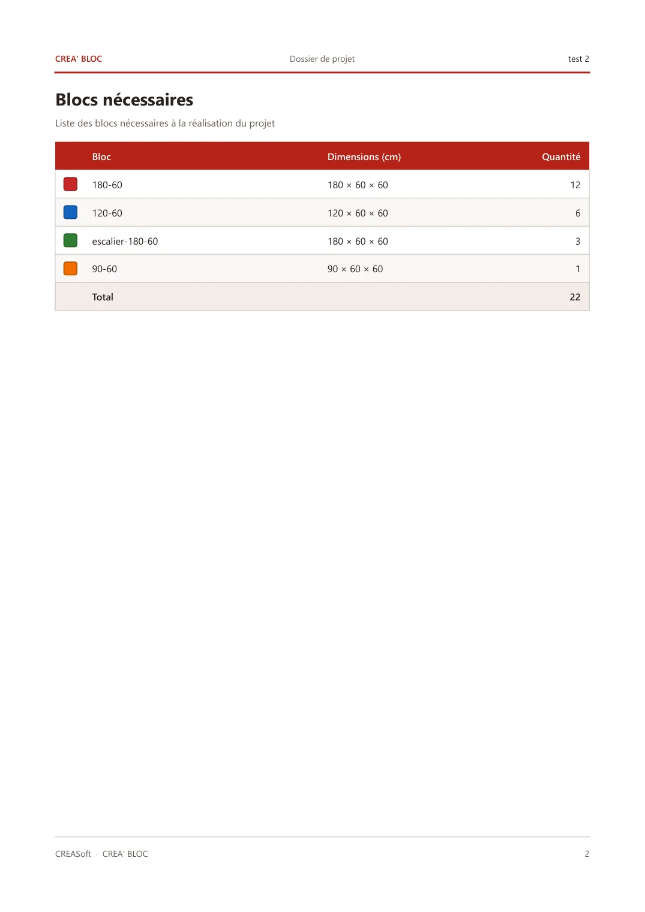

Logiciel de calepinage par Crea'bloc
Vous tracez le mur.
CREASoft pose chaque bloc, rang par rang.
Dessinez l'implantation de votre mur en blocs Crea'bloc. Le logiciel répartit les blocs sur chaque rang en décalant les joints, vous montre le mur en 3D et imprime le dossier de chantier avec la liste exacte des blocs à commander.
Pour Windows et macOS (Mac Apple Silicon, macOS 13 ou plus récent).

Les quatre étapes
-
1
Tracer
Vous dessinez l'axe des murs sur une grille, ou par-dessus un plan scanné mis à l'échelle.
-
2
Générer
Un clic, et chaque mur se remplit avec les blocs que vous avez autorisés.
-
3
Vérifier en 3D
Vous tournez autour du mur, vous ajoutez des cotes, vous prenez des photos.
-
4
Imprimer
Le dossier PDF part au client ou sur le chantier : liste des blocs et plan de pose de chaque rang.
Un plan qui garde ses cotes quand vous le modifiez
Posez des règles sur le dessin : ce mur reste vertical, ces deux-là restent parallèles, celui-ci fait 10 m. Ensuite, quand vous tirez un angle ou allongez une façade, le reste du plan suit tout seul et les règles restent respectées.

Les huit règles du plan
 Horizontalmet une ligne à l'horizontale, ou aligne des points.
Horizontalmet une ligne à l'horizontale, ou aligne des points.- Verticalmême chose, à la verticale.
- Fixerbloque un point, une ligne ou un mur à sa place.
 Coïncidenceréunit deux points, ou fait coulisser un point le long d'un mur.
Coïncidenceréunit deux points, ou fait coulisser un point le long d'un mur. Parallèlegarde deux murs parallèles.
Parallèlegarde deux murs parallèles. Perpendiculairegarde deux murs d'équerre.
Perpendiculairegarde deux murs d'équerre. Longueurimpose une longueur ou une distance, en mètres.
Longueurimpose une longueur ou une distance, en mètres. Angleimpose l'angle entre deux murs, en degrés.
Angleimpose l'angle entre deux murs, en degrés.
Si un déplacement casserait une règle, CREASoft affiche « Position impossible » et ne touche pas au plan.
L'aimant
Les points s'accrochent à la grille, aux bouts des murs et aux croisements. Les angles ferment proprement.
Le plan de fond
Importez le plan de l'architecte ou une vue aérienne, calez l'échelle avec deux clics sur une cote connue, puis tracez par-dessus.
Le mur réglé ligne par ligne
Hauteur en nombre de blocs, dessus plat, mur en escalier, blocs autorisés sur cette ligne : tout se règle dans le panneau de droite.
Le calepinage fait pour vous, assise par assise
Le calepinage, c'est le choix et la place de chaque bloc. CREASoft le calcule rang par rang. Il prend les blocs que vous avez cochés pour ce projet, décale les joints d'un rang à l'autre pour que le mur se tienne, et laisse les vides nécessaires aux angles et aux jonctions en T.
Exemple simplifié pour illustrer le principe. Dans le logiciel, la répartition suit votre plan, vos angles et votre catalogue de blocs.



Le même mur en L, rang par rang, tel qu'il sort dans le dossier PDF. Une couleur par type de bloc.
Le mur en volume, avant le premier bloc posé
Tournez autour du mur à la souris, zoomez sur un angle, vérifiez une hauteur. Le décompte des blocs reste affiché dans un coin. Les cotes de longueur et de hauteur se placent où vous voulez, et chaque vue peut être enregistrée en photo, jusqu'en 4K.


Un dossier de chantier prêt à imprimer
À la fin, CREASoft produit un PDF au nom du projet. On l'envoie au client avec le devis, on le laisse au maçon sur le chantier.
- Page de garde
- Le nom du projet, la date, vos coordonnées et la photo 3D de votre choix.
- Blocs nécessaires
- Chaque type de bloc, ses dimensions en centimètres et la quantité, avec le total.
- Un plan par rang
- Le plan de pose vu de dessus, une couleur par type de bloc, et la légende.
- Les grands chantiers
- Au-delà d'une longueur que vous réglez, une vue d'ensemble découpée en cases, puis le détail de chaque case.



Vos blocs, vos dimensions
CREASoft travaille avec votre inventaire : les blocs classés par épaisseur de mur, avec leurs cotes et leurs ergots. Ajoutez un format, modifiez-en un, exportez le catalogue pour le donner à un collègue.

Les blocs spéciaux
Pour les fins de mur et les passages, quatre formes se dessinent dans l'éditeur, qui en montre l'aperçu à mesure que vous tapez les cotes.
- ArrondiBout en demi-cercle, ergot rond réglable.
- FourcheUne ou deux réservations pour les fourches, largeur et écartement réglables.
- EscalierGiron et contremarche au choix.
- ObliqueCoupe en biais, longueur de diagonale réglable.
Les matrices
Une matrice habille la face du mur avec une photo, par exemple un parement façon moellon. Le mur s'affiche alors en 3D avec ce motif plutôt qu'avec ses joints.

Fiche technique
| Ordinateurs | Windows 10 et 11. macOS 13 ou plus récent, sur Mac Apple Silicon (M1 et suivants). |
|---|---|
| Unités | Plan en mètres, blocs en centimètres, angles en degrés. |
| Règles du plan | Horizontal, vertical, fixer, coïncidence, parallèle, perpendiculaire, longueur, angle. |
| Blocs spéciaux | Arrondi, fourche, escalier, oblique. |
| Vues 3D | Croquis, couleur, réalisme. Cotes de longueur et de hauteur déplaçables. |
| Photos | SD, HD, Full HD, 2K ou 4K, rangées dans une galerie par projet. |
| Dossier | PDF : page de garde, blocs nécessaires, un plan de pose par rang, vue d'ensemble découpée pour les longs murs. |
| Fichiers | Un fichier .projet par chantier, qui s'ouvre d'un double-clic. Inventaire exportable en fichier .inv. |
| Confort | Annuler et rétablir partout (Ctrl+Z, Ctrl+Y). Guide illustré intégré au logiciel, en treize parties. |
| Version | 1.10.22 |
Questions fréquentes
Faut-il savoir se servir d'un logiciel de dessin ?
Non. On trace un mur avec deux clics, l'aimant ferme les angles, et un guide illustré est intégré au logiciel, de l'ouverture d'un projet jusqu'à l'impression du dossier.
Est-ce que ça marche sur Mac ?
Oui, sur les Mac Apple Silicon (M1 et suivants) avec macOS 13 ou plus récent.
Puis-je ajouter mes propres formats de blocs ?
Oui. L'inventaire se modifie : vous entrez les trois cotes en centimètres et les ergots, ou vous créez un bloc spécial (arrondi, fourche, escalier, oblique). Les nouveaux blocs apparaissent ensuite dans les réglages de vos projets.
Comment le logiciel choisit-il les blocs ?
Pour chaque projet, vous choisissez l'épaisseur du mur et vous cochez les blocs autorisés. Vous pouvez même restreindre les blocs mur par mur. CREASoft ne pose que ceux-là, en décalant les joints d'un rang à l'autre.
Puis-je partir d'un plan existant ?
Oui. Importez une image du plan, indiquez une longueur connue pour mettre l'image à l'échelle, puis tracez les murs par-dessus.
Que contient le dossier PDF ?
Une page de garde avec la photo 3D choisie, la liste des blocs nécessaires avec leurs quantités, puis un plan de pose par rang. Pour un long mur, une vue d'ensemble découpée en cases et le détail de chaque case.
Où sont enregistrés mes projets ?
Sur votre ordinateur : chaque chantier est un fichier .projet qui contient le plan, les réglages et les photos. Les dossiers PDF et les photos vont dans un dossier docs_CREASoft, au nom de chaque projet.
Qui suis-je ?
Je m'appelle Yann Royer. C'est moi qui conçois et développe CREASoft, de la première ligne du plan jusqu'au dossier PDF. Si vous avez une question, une idée ou un problème avec le logiciel, c'est donc à moi que vous parlez directement.
Voir CREASoft en marche
Écrivez-moi ou appelez-moi pour une démonstration, ou pour être prévenu de l'ouverture des abonnements.
Tarif
CREASoft sera proposé par abonnement.
Le tarif sera bientôt annoncé.
Me joindre
- Téléphone +33 7 69 18 44 22
- E-mail royer.yann@free.fr